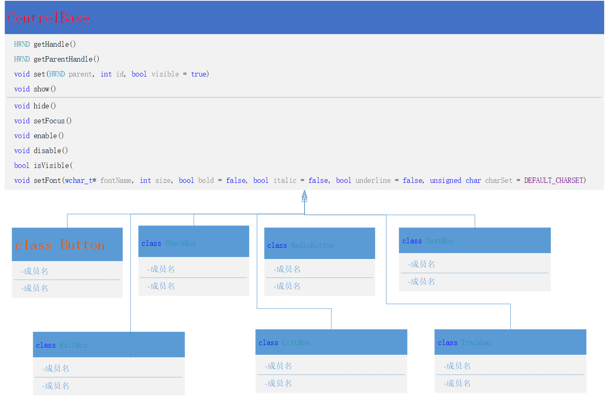
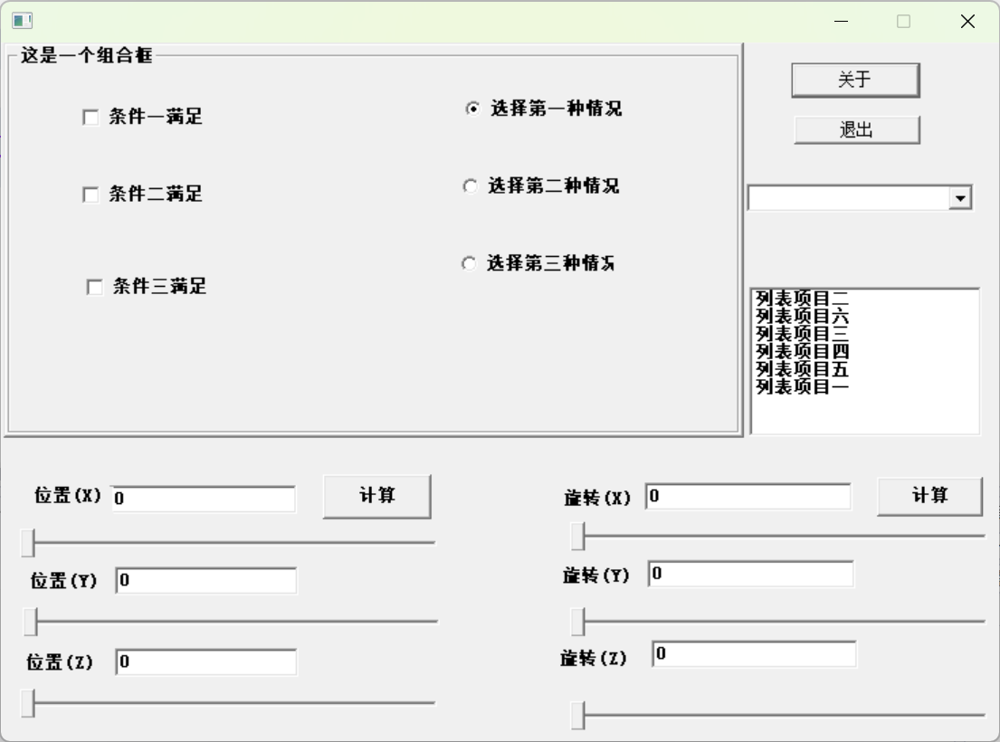
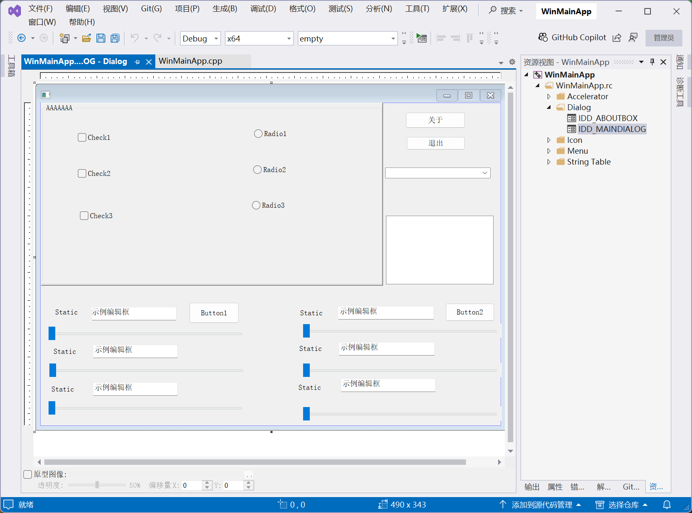
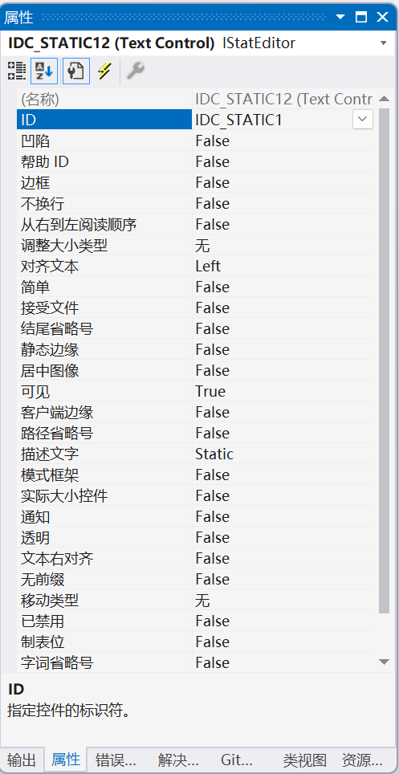

上篇文章描述了基于WinMainApp向导生成windowsAPI类型应用程序的基本使用过程，本文档简单介绍一下在进行windowsA窗口应用程序开发过程中经常用到的控件的使用方法。我们将常用控件的使用封装到了Controls.hpp文件中，其源代码参见本文附件部分。
本文件主要封装了Button(按钮)、CheckBox(多选框)、RadioButton(单选框)、TextBox(静态文本)、EditBox(编辑框)、ListBox(列表框)、Trackbar(滑动调节快，需要 comctl32.dll)、ComboBox(下拉列表框)、TreeView(树列表框, 需要 comctl32.dll）、UpDownBox(上下调节按钮 需要 comctl32.dll)、SysLink(带链接导引的静态文本, 需要comctl32.dll)、Picture(图片静态文本, SS_BITMAP)。其内部类层次结构如下：

从图中可以看出，class ControlBase为所有控件类的基类，关于类层次结构的设计不是本文探讨的重点，下面我们主要注重讲解各种控件的使用。
现在我们分步骤的带领大家在上一例程WinMainApp基础上，完成一个如下图所示的窗口程序设计：

第一步：在vs集成开发环境中找到资源编辑器(如果没有可通过视图->解决方案资源管理器菜单显示出来)，并打开IDD_MAINDIALOG对话框资源编辑器

通过左边的工具箱资源(如果没有可通过视图->工具箱菜单显示出来)，设计出窗口的基础布局。
注意：
1、对于static控件，如果我们希望通过程序修改其属性需要修改其ID号，我们统一将static控件的ID改为：
IDC_STATIC1、IDC_STATIC2、IDC_STATIC3、IDC_STATIC4、IDC_STATIC5、IDC_STATIC6
修改过程如下：在static控件上点击右键->点击属性->打开属性编辑器窗口：修改ID号属性

2、真对Radio1、Radio2、Radio3单选按钮需要设置Radio1的组属性true
3、修改下拉列表选择控件COMBO1的下拉列表长度：选择IDC_COMBO1控件->移动鼠标到∨处->当鼠标形状变为上下箭头后->点积鼠标：->出现列表区域，拉大列表区域。
第二步：在WinMainApp.cpp文件的WindowsForm类中添加变量：
xxxxxxxxxxWin::TextBox m_IDC_STATIC1;Win::TextBox m_IDC_STATIC2;Win::TextBox m_IDC_STATIC3;Win::TextBox m_IDC_STATIC4;Win::TextBox m_IDC_STATIC5;Win::TextBox m_IDC_STATIC6;Win::CheckBox m_IDC_CHECK1;Win::CheckBox m_IDC_CHECK2;Win::CheckBox m_IDC_CHECK3;Win::RadioButton m_IDC_RADIO1;Win::RadioButton m_IDC_RADIO2;Win::RadioButton m_IDC_RADIO3;Win::EditBox m_IDC_EDIT1;Win::EditBox m_IDC_EDIT2;Win::EditBox m_IDC_EDIT3;Win::EditBox m_IDC_EDIT4;Win::EditBox m_IDC_EDIT5;Win::EditBox m_IDC_EDIT6;Win::GroupBox m_IDC_GROUPBOX;Win::ComboBox m_IDC_COMBO1;Win::ListBox m_IDC_LIST1;Win::Trackbar m_IDC_SLIDER1;Win::Trackbar m_IDC_SLIDER2;Win::Trackbar m_IDC_SLIDER3;Win::Trackbar m_IDC_SLIDER4;Win::Trackbar m_IDC_SLIDER5;Win::Trackbar m_IDC_SLIDER6;Win::Button m_IDC_BUTTON1;Win::Button m_IDC_BUTTON2;
第三步：在WinMainApp.cpp文件的WindowsForm类Init_Event函数中初始化变量：
xxxxxxxxxxvirtual void Init_Event(HWND hDlg, UINT message, WPARAM wParam, LPARAM lParam){HWND hWnd = hDlg;// ::GetDlgItem(hDlg, IDC_OPENGLVIEW);m_AboutButton.set(hDlg, IDD_ABOUTBOX);m_CloseButton.set(hDlg, IDM_EXIT);m_IDC_STATIC1.set(hDlg, IDC_STATIC1);m_IDC_STATIC1.setFont(L"宋体", 10,true);m_IDC_STATIC1.setText(L"位置(X)");m_IDC_STATIC2.set(hDlg, IDC_STATIC2);m_IDC_STATIC2.setFont(L"宋体", 10, true);m_IDC_STATIC2.setText(L"位置(Y)");m_IDC_STATIC3.set(hDlg, IDC_STATIC3);m_IDC_STATIC3.setFont(L"宋体", 10, true);m_IDC_STATIC3.setText(L"位置(Z)");m_IDC_STATIC4.set(hDlg, IDC_STATIC4);m_IDC_STATIC4.setFont(L"宋体", 10, true);m_IDC_STATIC4.setText(L"旋转(X)");m_IDC_STATIC5.set(hDlg, IDC_STATIC5);m_IDC_STATIC5.setFont(L"宋体", 10, true);m_IDC_STATIC5.setText(L"旋转(Y)");m_IDC_STATIC6.set(hDlg, IDC_STATIC6);m_IDC_STATIC6.setFont(L"宋体", 10, true);m_IDC_STATIC6.setText(L"旋转(Z)");m_IDC_GROUPBOX.set(hDlg, IDC_GROUPBOX);m_IDC_GROUPBOX.setFont(L"宋体", 10, true);m_IDC_GROUPBOX.setText(L"这是一个组合框");m_IDC_CHECK1.set(hDlg, IDC_CHECK1);m_IDC_CHECK1.setFont(L"宋体", 10, true);m_IDC_CHECK1.setText(L"条件一满足");m_IDC_CHECK2.set(hDlg, IDC_CHECK2);m_IDC_CHECK2.setFont(L"宋体", 10, true);m_IDC_CHECK2.setText(L"条件二满足");m_IDC_CHECK3.set(hDlg, IDC_CHECK3);m_IDC_CHECK3.setFont(L"宋体", 10, true);m_IDC_CHECK3.setText(L"条件三满足");m_IDC_RADIO1.set(hDlg, IDC_RADIO1);m_IDC_RADIO1.setFont(L"宋体", 10, true);m_IDC_RADIO1.setText(L"选择第一种情况");m_IDC_RADIO1.check();m_IDC_RADIO2.set(hDlg, IDC_RADIO2);m_IDC_RADIO2.setFont(L"宋体", 10, true);m_IDC_RADIO2.setText(L"选择第二种情况");m_IDC_RADIO3.set(hDlg, IDC_RADIO3);m_IDC_RADIO3.setFont(L"宋体", 10, true);m_IDC_RADIO3.setText(L"选择第三种情况");m_IDC_EDIT1.set(hDlg, IDC_EDIT1);m_IDC_EDIT1.setFont(L"宋体", 10, true);m_IDC_EDIT1.setText(L"0");m_IDC_EDIT2.set(hDlg, IDC_EDIT2);m_IDC_EDIT2.setFont(L"宋体", 10, true);m_IDC_EDIT2.setText(L"0");m_IDC_EDIT3.set(hDlg, IDC_EDIT3);m_IDC_EDIT3.setFont(L"宋体", 10, true);m_IDC_EDIT3.setText(L"0");m_IDC_EDIT4.set(hDlg, IDC_EDIT4);m_IDC_EDIT4.setFont(L"宋体", 10, true);m_IDC_EDIT4.setText(L"0");m_IDC_EDIT5.set(hDlg, IDC_EDIT5);m_IDC_EDIT5.setFont(L"宋体", 10, true);m_IDC_EDIT5.setText(L"0");m_IDC_EDIT6.set(hDlg, IDC_EDIT6);m_IDC_EDIT6.setFont(L"宋体", 10, true);m_IDC_EDIT6.setText(L"0");m_IDC_COMBO1.set(hDlg, IDC_COMBO1);m_IDC_COMBO1.setFont(L"宋体", 10, true);m_IDC_COMBO1.addString(L"列表项目一");m_IDC_COMBO1.addString(L"列表项目二");m_IDC_COMBO1.addString(L"列表项目三");m_IDC_COMBO1.addString(L"列表项目四");m_IDC_COMBO1.addString(L"列表项目五");m_IDC_COMBO1.addString(L"列表项目六");m_IDC_LIST1.set(hDlg, IDC_LIST1);m_IDC_LIST1.setFont(L"宋体", 10, true);m_IDC_LIST1.addString(L"列表项目一");m_IDC_LIST1.addString(L"列表项目二");m_IDC_LIST1.addString(L"列表项目三");m_IDC_LIST1.addString(L"列表项目四");m_IDC_LIST1.addString(L"列表项目五");m_IDC_LIST1.addString(L"列表项目六");m_IDC_SLIDER1.set(hDlg, IDC_SLIDER1);m_IDC_SLIDER1.setRange(0, 100);m_IDC_SLIDER2.set(hDlg, IDC_SLIDER2);m_IDC_SLIDER2.setRange(0, 100);m_IDC_SLIDER3.set(hDlg, IDC_SLIDER3);m_IDC_SLIDER3.setRange(0, 100);m_IDC_SLIDER4.set(hDlg, IDC_SLIDER4);m_IDC_SLIDER4.setRange(0, 360);m_IDC_SLIDER5.set(hDlg, IDC_SLIDER5);m_IDC_SLIDER5.setRange(0, 360);m_IDC_SLIDER6.set(hDlg, IDC_SLIDER6);m_IDC_SLIDER6.setRange(0, 360);m_IDC_BUTTON1.set(hDlg, IDC_BUTTON1);m_IDC_BUTTON1.setFont(L"宋体", 10, true);m_IDC_BUTTON1.setText(L"计算");m_IDC_BUTTON2.set(hDlg, IDC_BUTTON2);m_IDC_BUTTON2.setFont(L"宋体", 10, true);m_IDC_BUTTON2.setText(L"计算");return;};
第四步：重载Notify_Event函数，响应IDC_SLIDER事件：
xxxxxxxxxxvirtual void Notify_Event(HWND hDlg, UINT message, WPARAM wParam, LPARAM lParam){// NMHDR* p = (NMHDR*)(void*)lParam;LONG iID = wParam;if (iID == IDC_SLIDER1){wchar_t tempWChar[32];int tempPos = m_IDC_SLIDER1.getPos();_ltow(tempPos, tempWChar, 10);m_IDC_EDIT1.setText(tempWChar);}else if (iID == IDC_SLIDER2){wchar_t tempWChar[32];int tempPos = m_IDC_SLIDER2.getPos();_ltow(tempPos, tempWChar, 10);m_IDC_EDIT2.setText(tempWChar);}else if (iID == IDC_SLIDER3){wchar_t tempWChar[32];int tempPos = m_IDC_SLIDER3.getPos();_ltow(tempPos, tempWChar, 10);m_IDC_EDIT3.setText(tempWChar);}else if (iID == IDC_SLIDER4){wchar_t tempWChar[32];int tempPos = m_IDC_SLIDER4.getPos();_ltow(tempPos, tempWChar, 10);m_IDC_EDIT4.setText(tempWChar);}else if (iID == IDC_SLIDER5){wchar_t tempWChar[32];int tempPos = m_IDC_SLIDER5.getPos();_ltow(tempPos, tempWChar, 10);m_IDC_EDIT5.setText(tempWChar);}else if (iID == IDC_SLIDER6){wchar_t tempWChar[32];int tempPos = m_IDC_SLIDER6.getPos();_ltow(tempPos, tempWChar, 10);m_IDC_EDIT6.setText(tempWChar);}}
第五步：在Command_Event(该事件已经重载了)函数中添加代码，响应Button事件：
xxxxxxxxxxvirtual void Command_Event(HWND hDlg, UINT message, WPARAM wParam, LPARAM lParam){int wmId = LOWORD(wParam);if (wmId == IDD_ABOUTBOX){Win::WinForm::ShowModelDialog(IDD_ABOUTBOX, hDlg, About);// Win::WinForm::DialogWindowProc);}else if (wmId == IDM_EXIT){::SendMessageW(hDlg, WM_DESTROY, 0, 0);}else if (wmId == IDC_BUTTON1){wchar_t tempWChar[32];m_IDC_EDIT1.getText(tempWChar, 32);int PosX = _wtoi(tempWChar);m_IDC_EDIT2.getText(tempWChar, 32);int PosY = _wtoi(tempWChar);m_IDC_EDIT3.getText(tempWChar, 32);int PosZ = _wtoi(tempWChar);int tempTotal = PosX + PosY + PosZ;_ltow(tempTotal, tempWChar, 10);::MessageBox(this->m_hWnd, tempWChar, L"消息对话框", MB_OKCANCEL);}else if (wmId == IDC_BUTTON2){wchar_t tempWChar[32];m_IDC_EDIT4.getText(tempWChar, 32);int RotX = _wtoi(tempWChar);m_IDC_EDIT5.getText(tempWChar, 32);int RotY = _wtoi(tempWChar);m_IDC_EDIT6.getText(tempWChar, 32);int RotZ = _wtoi(tempWChar);int tempTotal = RotX + RotY + RotZ;_ltow(tempTotal, tempWChar, 10);::MessageBox(this->m_hWnd, tempWChar, L"消息对话框", MB_OKCANCEL);}}
附件1：WinMainApp.cpp
x// WinMainApp.cpp : 定义应用程序的入口点。//#include "framework.h"#include "WinMainApp.h"#include "WinForm.hpp"#define MAX_LOADSTRING 100// 全局变量:HINSTANCE hInst; // 当前实例WCHAR szTitle[MAX_LOADSTRING]; // 标题栏文本WCHAR szWindowClass[MAX_LOADSTRING]; // 主窗口类名INT_PTR CALLBACK About(HWND hDlg, UINT message, WPARAM wParam, LPARAM lParam);class WindowsForm :public Win::WinForm{private:Win::Button m_AboutButton;Win::Button m_CloseButton;public:WindowsForm() :Win::WinForm(){};virtual void Init_Event(HWND hDlg, UINT message, WPARAM wParam, LPARAM lParam){HWND hWnd = hDlg;// ::GetDlgItem(hDlg, IDC_OPENGLVIEW);m_AboutButton.set(hDlg, IDD_ABOUTBOX);m_CloseButton.set(hDlg, IDM_EXIT);m_IDC_STATIC1.set(hDlg, IDC_STATIC1);m_IDC_STATIC1.setFont(L"宋体", 10,true);m_IDC_STATIC1.setText(L"位置(X)");m_IDC_STATIC2.set(hDlg, IDC_STATIC2);m_IDC_STATIC2.setFont(L"宋体", 10, true);m_IDC_STATIC2.setText(L"位置(Y)");m_IDC_STATIC3.set(hDlg, IDC_STATIC3);m_IDC_STATIC3.setFont(L"宋体", 10, true);m_IDC_STATIC3.setText(L"位置(Z)");m_IDC_STATIC4.set(hDlg, IDC_STATIC4);m_IDC_STATIC4.setFont(L"宋体", 10, true);m_IDC_STATIC4.setText(L"旋转(X)");m_IDC_STATIC5.set(hDlg, IDC_STATIC5);m_IDC_STATIC5.setFont(L"宋体", 10, true);m_IDC_STATIC5.setText(L"旋转(Y)");m_IDC_STATIC6.set(hDlg, IDC_STATIC6);m_IDC_STATIC6.setFont(L"宋体", 10, true);m_IDC_STATIC6.setText(L"旋转(Z)");m_IDC_GROUPBOX.set(hDlg, IDC_GROUPBOX);m_IDC_GROUPBOX.setFont(L"宋体", 10, true);m_IDC_GROUPBOX.setText(L"这是一个组合框");m_IDC_CHECK1.set(hDlg, IDC_CHECK1);m_IDC_CHECK1.setFont(L"宋体", 10, true);m_IDC_CHECK1.setText(L"条件一满足");m_IDC_CHECK2.set(hDlg, IDC_CHECK2);m_IDC_CHECK2.setFont(L"宋体", 10, true);m_IDC_CHECK2.setText(L"条件二满足");m_IDC_CHECK3.set(hDlg, IDC_CHECK3);m_IDC_CHECK3.setFont(L"宋体", 10, true);m_IDC_CHECK3.setText(L"条件三满足");m_IDC_RADIO1.set(hDlg, IDC_RADIO1);m_IDC_RADIO1.setFont(L"宋体", 10, true);m_IDC_RADIO1.setText(L"选择第一种情况");m_IDC_RADIO1.check();m_IDC_RADIO2.set(hDlg, IDC_RADIO2);m_IDC_RADIO2.setFont(L"宋体", 10, true);m_IDC_RADIO2.setText(L"选择第二种情况");m_IDC_RADIO3.set(hDlg, IDC_RADIO3);m_IDC_RADIO3.setFont(L"宋体", 10, true);m_IDC_RADIO3.setText(L"选择第三种情况");m_IDC_EDIT1.set(hDlg, IDC_EDIT1);m_IDC_EDIT1.setFont(L"宋体", 10, true);m_IDC_EDIT1.setText(L"0");m_IDC_EDIT2.set(hDlg, IDC_EDIT2);m_IDC_EDIT2.setFont(L"宋体", 10, true);m_IDC_EDIT2.setText(L"0");m_IDC_EDIT3.set(hDlg, IDC_EDIT3);m_IDC_EDIT3.setFont(L"宋体", 10, true);m_IDC_EDIT3.setText(L"0");m_IDC_EDIT4.set(hDlg, IDC_EDIT4);m_IDC_EDIT4.setFont(L"宋体", 10, true);m_IDC_EDIT4.setText(L"0");m_IDC_EDIT5.set(hDlg, IDC_EDIT5);m_IDC_EDIT5.setFont(L"宋体", 10, true);m_IDC_EDIT5.setText(L"0");m_IDC_EDIT6.set(hDlg, IDC_EDIT6);m_IDC_EDIT6.setFont(L"宋体", 10, true);m_IDC_EDIT6.setText(L"0");m_IDC_COMBO1.set(hDlg, IDC_COMBO1);m_IDC_COMBO1.setFont(L"宋体", 10, true);m_IDC_COMBO1.addString(L"列表项目一");m_IDC_COMBO1.addString(L"列表项目二");m_IDC_COMBO1.addString(L"列表项目三");m_IDC_COMBO1.addString(L"列表项目四");m_IDC_COMBO1.addString(L"列表项目五");m_IDC_COMBO1.addString(L"列表项目六");m_IDC_LIST1.set(hDlg, IDC_LIST1);m_IDC_LIST1.setFont(L"宋体", 10, true);m_IDC_LIST1.addString(L"列表项目一");m_IDC_LIST1.addString(L"列表项目二");m_IDC_LIST1.addString(L"列表项目三");m_IDC_LIST1.addString(L"列表项目四");m_IDC_LIST1.addString(L"列表项目五");m_IDC_LIST1.addString(L"列表项目六");m_IDC_SLIDER1.set(hDlg, IDC_SLIDER1);m_IDC_SLIDER1.setRange(0, 100);m_IDC_SLIDER2.set(hDlg, IDC_SLIDER2);m_IDC_SLIDER2.setRange(0, 100);m_IDC_SLIDER3.set(hDlg, IDC_SLIDER3);m_IDC_SLIDER3.setRange(0, 100);m_IDC_SLIDER4.set(hDlg, IDC_SLIDER4);m_IDC_SLIDER4.setRange(0, 360);m_IDC_SLIDER5.set(hDlg, IDC_SLIDER5);m_IDC_SLIDER5.setRange(0, 360);m_IDC_SLIDER6.set(hDlg, IDC_SLIDER6);m_IDC_SLIDER6.setRange(0, 360);m_IDC_BUTTON1.set(hDlg, IDC_BUTTON1);m_IDC_BUTTON1.setFont(L"宋体", 10, true);m_IDC_BUTTON1.setText(L"计算");m_IDC_BUTTON2.set(hDlg, IDC_BUTTON2);m_IDC_BUTTON2.setFont(L"宋体", 10, true);m_IDC_BUTTON2.setText(L"计算");return;};virtual void Command_Event(HWND hDlg, UINT message, WPARAM wParam, LPARAM lParam){int wmId = LOWORD(wParam);if (wmId == IDD_ABOUTBOX){Win::WinForm::ShowModelDialog(IDD_ABOUTBOX, hDlg, About);// Win::WinForm::DialogWindowProc);}else if (wmId == IDM_EXIT){::SendMessageW(hDlg, WM_DESTROY, 0, 0);}else if (wmId == IDC_BUTTON1){wchar_t tempWChar[32];m_IDC_EDIT1.getText(tempWChar, 32);int PosX = _wtoi(tempWChar);m_IDC_EDIT2.getText(tempWChar, 32);int PosY = _wtoi(tempWChar);m_IDC_EDIT3.getText(tempWChar, 32);int PosZ = _wtoi(tempWChar);int tempTotal = PosX + PosY + PosZ;_ltow(tempTotal, tempWChar, 10);::MessageBox(this->m_hWnd, tempWChar, L"消息对话框", MB_OKCANCEL);}else if (wmId == IDC_BUTTON2){wchar_t tempWChar[32];m_IDC_EDIT4.getText(tempWChar, 32);int RotX = _wtoi(tempWChar);m_IDC_EDIT5.getText(tempWChar, 32);int RotY = _wtoi(tempWChar);m_IDC_EDIT6.getText(tempWChar, 32);int RotZ = _wtoi(tempWChar);int tempTotal = RotX + RotY + RotZ;_ltow(tempTotal, tempWChar, 10);::MessageBox(this->m_hWnd, tempWChar, L"消息对话框", MB_OKCANCEL);}}virtual void Notify_Event(HWND hDlg, UINT message, WPARAM wParam, LPARAM lParam){// NMHDR* p = (NMHDR*)(void*)lParam;LONG iID = wParam;if (iID == IDC_SLIDER1){wchar_t tempWChar[32];int tempPos = m_IDC_SLIDER1.getPos();_ltow(tempPos, tempWChar, 10);m_IDC_EDIT1.setText(tempWChar);}else if (iID == IDC_SLIDER2){wchar_t tempWChar[32];int tempPos = m_IDC_SLIDER2.getPos();_ltow(tempPos, tempWChar, 10);m_IDC_EDIT2.setText(tempWChar);}else if (iID == IDC_SLIDER3){wchar_t tempWChar[32];int tempPos = m_IDC_SLIDER3.getPos();_ltow(tempPos, tempWChar, 10);m_IDC_EDIT3.setText(tempWChar);}else if (iID == IDC_SLIDER4){wchar_t tempWChar[32];int tempPos = m_IDC_SLIDER4.getPos();_ltow(tempPos, tempWChar, 10);m_IDC_EDIT4.setText(tempWChar);}else if (iID == IDC_SLIDER5){wchar_t tempWChar[32];int tempPos = m_IDC_SLIDER5.getPos();_ltow(tempPos, tempWChar, 10);m_IDC_EDIT5.setText(tempWChar);}else if (iID == IDC_SLIDER6){wchar_t tempWChar[32];int tempPos = m_IDC_SLIDER6.getPos();_ltow(tempPos, tempWChar, 10);m_IDC_EDIT6.setText(tempWChar);}}Win::TextBox m_IDC_STATIC1;Win::TextBox m_IDC_STATIC2;Win::TextBox m_IDC_STATIC3;Win::TextBox m_IDC_STATIC4;Win::TextBox m_IDC_STATIC5;Win::TextBox m_IDC_STATIC6;Win::CheckBox m_IDC_CHECK1;Win::CheckBox m_IDC_CHECK2;Win::CheckBox m_IDC_CHECK3;Win::RadioButton m_IDC_RADIO1;Win::RadioButton m_IDC_RADIO2;Win::RadioButton m_IDC_RADIO3;Win::EditBox m_IDC_EDIT1;Win::EditBox m_IDC_EDIT2;Win::EditBox m_IDC_EDIT3;Win::EditBox m_IDC_EDIT4;Win::EditBox m_IDC_EDIT5;Win::EditBox m_IDC_EDIT6;Win::GroupBox m_IDC_GROUPBOX;Win::ComboBox m_IDC_COMBO1;Win::ListBox m_IDC_LIST1;Win::Trackbar m_IDC_SLIDER1;Win::Trackbar m_IDC_SLIDER2;Win::Trackbar m_IDC_SLIDER3;Win::Trackbar m_IDC_SLIDER4;Win::Trackbar m_IDC_SLIDER5;Win::Trackbar m_IDC_SLIDER6;Win::Button m_IDC_BUTTON1;Win::Button m_IDC_BUTTON2;};WindowsForm g_WinForm;int APIENTRY wWinMain(_In_ HINSTANCE hInstance,_In_opt_ HINSTANCE hPrevInstance,_In_ LPWSTR lpCmdLine,_In_ int nCmdShow){UNREFERENCED_PARAMETER(hPrevInstance);UNREFERENCED_PARAMETER(lpCmdLine);// TODO: 在此处放置代码。// 初始化全局字符串LoadStringW(hInstance, IDS_APP_TITLE, szTitle, MAX_LOADSTRING);LoadStringW(hInstance, IDC_WINMAINAPP, szWindowClass, MAX_LOADSTRING);g_WinForm.CreateWindowFromReSource(hInstance, IDD_MAINDIALOG);return g_WinForm.Run();}// “关于”框的消息处理程序。INT_PTR CALLBACK About(HWND hDlg, UINT message, WPARAM wParam, LPARAM lParam){UNREFERENCED_PARAMETER(lParam);switch (message){case WM_INITDIALOG:return (INT_PTR)TRUE;case WM_COMMAND:if (LOWORD(wParam) == IDOK || LOWORD(wParam) == IDCANCEL){EndDialog(hDlg, LOWORD(wParam));return (INT_PTR)TRUE;}break;}return (INT_PTR)FALSE;}
附件2：Controls.hpp
x///////////////////////////////////////////////////////////////////////////////// Controls.hpp 用于构建Windows API函数形式的应用程序开发过程中资源文件中ID号与对应// 控件的代码联系// 本头文件主要实现的如下控件的联系 (button, checkbox, textbox...)//// Button : 按钮// CheckBox : 多选框// RadioButton : 单选框// TextBox : 静态文本 注意不能使用static名称// EditBox : 编辑框// ListBox : 列表框// Trackbar : trackbar(slider), 需要 comctl32.dll// ComboBox : 下拉列表框// TreeView : 树列表框, 需要 comctl32.dll// UpDownBox : Up-Down(Spin) 上下调节按钮 需要 comctl32.dll// SysLink : 带链接导引的静态文本, required comctl32.dll// Picture : 图片静态文本, SS_BITMAP//// 版权所有 刘文庆 1997.6 廊坊// 为教学2023年12月 刘文庆于廊坊东方学院二次修改///////////////////////////////////////////////////////////////////////////////#pragma warning(disable : 4996)#define _CRT_SECURE_NO_WARNINGS#ifndef CONTROLS_HPP#define CONTROLS_HPP#include <windows.h>#include <commctrl.h>namespace Win{// constants //////////////////////////////////////////////////////////////enum { MAX_INDEX = 30000 };///////////////////////////////////////////////////////////////////////////// base class of control object///////////////////////////////////////////////////////////////////////////class ControlBase{public:// ctor / dtorControlBase() : handle(0), parent(0), id(0), fontHandle(0) {}ControlBase(HWND parent, int id, bool visible = true) : handle(GetDlgItem(parent, id)) { if (!visible) disable(); }~ControlBase() {if (fontHandle) DeleteObject(fontHandle);fontHandle = 0;}// return handleHWND getHandle() const { return handle; }HWND getParentHandle() const { return parent; }// set all membersvoid set(HWND parent, int id, bool visible = true) {this->parent = parent;this->id = id;handle = GetDlgItem(parent, id);if (!visible) disable();}// show/hide controlvoid show() { ShowWindow(handle, SW_SHOW); }void hide() { ShowWindow(handle, SW_HIDE); }// set focus to the controlvoid setFocus() { SetFocus(handle); }// enable/disable controlvoid enable() { EnableWindow(handle, true); }void disable() { EnableWindow(handle, false); }bool isVisible() const { return (IsWindowVisible(handle) != 0); }// change fontvoid setFont(wchar_t* fontName, int size, bool bold = false, bool italic = false, bool underline = false, unsigned char charSet = DEFAULT_CHARSET){HDC hdc = GetDC(handle);LOGFONT logFont;HFONT oldFont = (HFONT)SendMessage(handle, WM_GETFONT, 0, 0);GetObject(oldFont, sizeof(LOGFONT), &logFont);wcsncpy(logFont.lfFaceName, fontName, LF_FACESIZE);logFont.lfHeight = -MulDiv(size, GetDeviceCaps(hdc, LOGPIXELSY), 72);ReleaseDC(handle, hdc);if (bold) logFont.lfWeight = FW_BOLD;else logFont.lfWeight = FW_NORMAL;logFont.lfItalic = italic;logFont.lfUnderline = underline;logFont.lfCharSet = charSet;if (fontHandle) DeleteObject(fontHandle);fontHandle = CreateFontIndirect(&logFont);SendMessage(handle, WM_SETFONT, (WPARAM)fontHandle, MAKELPARAM(1, 0));}// modify stylesvoid addStyles(long newStyles){long styles = (long)GetWindowLongPtr(handle, GWL_STYLE);styles |= newStyles;SetWindowLongPtr(handle, GWL_STYLE, styles);SetWindowPos(handle, 0, 0, 0, 0, 0, SWP_NOMOVE | SWP_NOSIZE | SWP_NOZORDER);}void removeStyles(long noStyles){long styles = (long)GetWindowLongPtr(handle, GWL_STYLE);styles &= ~noStyles;SetWindowLongPtr(handle, GWL_STYLE, styles);SetWindowPos(handle, 0, 0, 0, 0, 0, SWP_NOMOVE | SWP_NOSIZE | SWP_NOZORDER);}protected:HWND handle;HWND parent;int id;HFONT fontHandle;};///////////////////////////////////////////////////////////////////////////// button class// 事件类型中通过 WM_COMMAND 消息处理中，通过检查 LOWORD(wParam) 的值来确定是哪个按钮被点击了。///////////////////////////////////////////////////////////////////////////class Button : public ControlBase{public:// ctor / dtorButton() : ControlBase() {}Button(HWND parent, int id, bool visible = true) : ControlBase(parent, id, visible) {}~Button() {}// change captionvoid setText(const wchar_t* text) { SendMessage(handle, WM_SETTEXT, 0, (LPARAM)text); }// add an image/iconvoid setImage(HBITMAP bitmap) { SendMessage(handle, BM_SETIMAGE, (WPARAM)IMAGE_BITMAP, (LPARAM)bitmap); }void setImage(HICON icon) { SendMessage(handle, BM_SETIMAGE, (WPARAM)IMAGE_ICON, (LPARAM)icon); }};///////////////////////////////////////////////////////////////////////////// Checkbox class///////////////////////////////////////////////////////////////////////////class CheckBox : public Button{public:CheckBox() : Button() {}CheckBox(HWND parent, int id, bool visible = true) : Button(parent, id, visible) {}~CheckBox() {}void check() { SendMessage(handle, BM_SETCHECK, (WPARAM)BST_CHECKED, 0); }void uncheck() { SendMessage(handle, BM_SETCHECK, (WPARAM)BST_UNCHECKED, 0); }bool isChecked() const { return (SendMessage(handle, BM_GETCHECK, 0, 0) == BST_CHECKED); }};///////////////////////////////////////////////////////////////////////////// Radio button class///////////////////////////////////////////////////////////////////////////class RadioButton : public Button{public:RadioButton() : Button() {}RadioButton(HWND parent, int id, bool visible = true) : Button(parent, id, visible) {}~RadioButton() {}void check() { SendMessage(handle, BM_SETCHECK, (WPARAM)BST_CHECKED, 0); }void uncheck() { SendMessage(handle, BM_SETCHECK, (WPARAM)BST_UNCHECKED, 0); }bool isChecked() const { return (SendMessage(handle, BM_GETCHECK, 0, 0) == BST_CHECKED); }};///////////////////////////////////////////////////////////////////////////// Text box class///////////////////////////////////////////////////////////////////////////class TextBox : public ControlBase{public:TextBox() : ControlBase() {}TextBox(HWND parent, int id, bool visible = true) : ControlBase(parent, id, visible) {}~TextBox() {}void setText(const wchar_t* buf) { SendMessage(handle, WM_SETTEXT, 0, (LPARAM)buf); }void getText(wchar_t* buf, int len) const { SendMessage(handle, WM_GETTEXT, (WPARAM)len, (LPARAM)buf); }int getTextLength() const { return (int)SendMessage(handle, WM_GETTEXTLENGTH, 0, 0); } // return number of chars};///////////////////////////////////////////////////////////////////////////// Edit box class///////////////////////////////////////////////////////////////////////////class EditBox : public TextBox{public:EditBox() : TextBox(), maxLength(0) {}EditBox(HWND parent, int id, bool visible = true) : TextBox(parent, id, visible), maxLength((int)SendMessage(handle, EM_GETLIMITTEXT, 0, 0)) {}~EditBox() {}// set all membersvoid set(HWND parent, int id, bool visible = true) {ControlBase::set(parent, id, visible);maxLength = (int)SendMessage(handle, EM_GETLIMITTEXT, 0, 0);}void selectText() { SendMessage(handle, EM_SETSEL, 0, -1); }void unselectText() { SendMessage(handle, EM_SETSEL, -1, 0); }int getLimitText() const { return maxLength; } // return max number of charsstatic bool isChanged(int code) { return (code == EN_CHANGE); } // LOWORD(wParam)==id && HIWORD(wParam)==EN_CHANGEprotected:int maxLength;};///////////////////////////////////////////////////////////////////////////// List box class///////////////////////////////////////////////////////////////////////////class ListBox : public ControlBase{public:ListBox() : ControlBase(), listCount(0) {}ListBox(HWND parent, int id, bool visible = true) : ControlBase(parent, id, visible), listCount(0) {}~ListBox() {}int getCount() const { return listCount; }void resetContent() { SendMessage(handle, LB_RESETCONTENT, 0, 0); listCount = 0; }// add a string at the end of the list// If list is full, then delete the most front entry first and add new string.// Also, make the latest entry is visible with LB_SETTOPINDEX.void addString(const wchar_t* str) {if (listCount >= MAX_INDEX) deleteString(0);int index = (int)SendMessage(handle, LB_ADDSTRING, 0, (LPARAM)str);if (index != LB_ERR) ++listCount;SendMessage(handle, LB_SETTOPINDEX, index, 0);}// insert a string at given index into the list// If the index is greater than listCount, the string is added to the end of the list.// If the list is full, then delete the last entry before inserting new string.void insertString(const wchar_t* str, int index) {if (listCount >= MAX_INDEX) deleteString(listCount - 1);index = (int)SendMessage(handle, LB_INSERTSTRING, index, (LPARAM)str);if (index != LB_ERR) ++listCount;SendMessage(handle, LB_SETTOPINDEX, index, 0);}void deleteString(int index) { if (SendMessage(handle, LB_DELETESTRING, index, 0) != LB_ERR) --listCount; }int getSelect() { return SendMessage(handle, LB_GETCURSEL, 0, 0); };void getSelectItemText(wchar_t* str, int& Length){// Get selected index.int lbItem = (int)SendMessage(handle, LB_GETCURSEL, 0, 0);// display item's text//TCHAR buff[MAX_PATH];SendMessage(handle, LB_GETTEXT, lbItem, (LPARAM)str);// lstrcpyW(str, buff);Length = lstrlenW(str);}private:int listCount;};///////////////////////////////////////////////////////////////////////////// Trackbar class (Slider)// It requires loading comctl32.dll. Note that the range values are logical// numbers and all integers.For example, if you want the range of 0~1 and// 100 increment steps(ticks) between 0 and 1, then you need to call// setRange(0, 100), not setRange(0,1). In other words, this class is not// responsible to scale the range to actual values.///////////////////////////////////////////////////////////////////////////class Trackbar : public ControlBase{public:Trackbar() : ControlBase() {}Trackbar(HWND parent, int id, bool visible = true) : ControlBase(parent, id, visible) {}~Trackbar() {}// set/get rangevoid setRange(int first, int last) { SendMessage(handle, TBM_SETRANGE, (WPARAM)true, (LPARAM)MAKELONG(first, last)); }int getRangeMin() const { return (int)SendMessage(handle, TBM_GETRANGEMIN, 0, 0); }int getRangeMax() const { return (int)SendMessage(handle, TBM_GETRANGEMAX, 0, 0); }// set a tick mark at a specific position// Trackbar creates its own first and last tick marks, so do not use it for first and last tick mark.void setTic(int pos) {if (pos <= getRangeMin()) return; // skip if it is the first tickif (pos >= getRangeMax()) return; // skip if it is the last tickSendMessage(handle, TBM_SETTIC, 0, (LPARAM)pos);}// set the interval frequency for tick marks.void setTicFreq(int freq) { SendMessage(handle, TBM_SETTICFREQ, (WPARAM)freq, 0); }// set/get current thumb positionint getPos() const { return (int)SendMessage(handle, TBM_GETPOS, 0, 0); }void setPos(int pos) { SendMessage(handle, TBM_SETPOS, (WPARAM)true, (LPARAM)pos); }};///////////////////////////////////////////////////////////////////////////// Combo box class///////////////////////////////////////////////////////////////////////////class ComboBox : public ControlBase{public:ComboBox() : ControlBase() {}ComboBox(HWND parent, int id, bool visible = true) : ControlBase(parent, id, visible) {}~ComboBox() {}int getCount() const { return (int)SendMessage(handle, CB_GETCOUNT, 0, 0); }void resetContent() { SendMessage(handle, CB_RESETCONTENT, 0, 0); }// add a string at the end of the combo boxvoid addString(const wchar_t* str) { SendMessage(handle, CB_ADDSTRING, 0, (LPARAM)str); }// insert a string at given index into the listvoid insertString(const wchar_t* str, int index) { SendMessage(handle, CB_INSERTSTRING, index, (LPARAM)str); }// delete an entryvoid deleteString(int index) { SendMessage(handle, CB_DELETESTRING, index, 0); }// get/set current selectionint getCurrentSelection() { return (int)SendMessage(handle, CB_GETCURSEL, 0, 0); }void setCurrentSelection(int index) { SendMessage(handle, CB_SETCURSEL, index, 0); }void getSelectItemText(wchar_t* str, int& Length){// Get selected index.int lbItem = (int)SendMessage(handle, CB_GETCURSEL, 0, 0);::SendMessage(handle, CB_GETLBTEXT, lbItem, (LPARAM)str);Length = lstrlenW(str);}};///////////////////////////////////////////////////////////////////////////// TreeView class// It requires comctl32.dll.///////////////////////////////////////////////////////////////////////////class TreeView : public ControlBase{public:TreeView() : ControlBase() {}TreeView(HWND parent, int id, bool visible = true) : ControlBase(parent, id, visible) {}~TreeView() {}// get the handle to an item, HTREEITEM// The possible flags are TVGN_CARET, TVGN_CHILD, TVGN_DROPHILITE, TVGN_FIRSTVISIBLE,// TVGN_LASTVISIBLE, TVGN_NEXT, TVGN_NEXTSELECTED, TVGN_NEXTVISIBLE, TVGN_PARENT,// TVGN_PREVIOUS, TVGN_PREVIOUSVISIBLE, TVGN_ROOT// It returns NULL if failed.HTREEITEM getNextItem(HTREEITEM item, unsigned int flag = TVGN_NEXT) const{return (HTREEITEM)SendMessage(handle, TVM_GETNEXTITEM, (WPARAM)flag, (LPARAM)item);}// getNextItem() with specific flags// It returns NULL if failedHTREEITEM getNext(HTREEITEM item) const { return getNextItem(item, TVGN_NEXT); } // get the next sibling itemHTREEITEM getPrevious(HTREEITEM item) const { return getNextItem(item, TVGN_PREVIOUS); }// get the previous sibling itemHTREEITEM getRoot() const { return getNextItem(0, TVGN_ROOT); } // get the topmost itemHTREEITEM getParent(HTREEITEM item) const { return getNextItem(item, TVGN_PARENT); } // get the parent itemHTREEITEM getChild(HTREEITEM item) const { return getNextItem(item, TVGN_CHILD); } // get the first child itemHTREEITEM getSelected() const { return getNextItem(0, TVGN_CARET); } // get the selected itemHTREEITEM getDropHilight() const { return getNextItem(0, TVGN_DROPHILITE); } // get the target item of a drag-and-drop operation.// set/get pointer to TVITEM struct// User must set TVITEM.hItem and TVITEM.mask to retrieve/set information of the item, then pass its pointer to this function.void setItem(TVITEM* tvitem) { SendMessage(handle, TVM_SETITEM, 0, (LPARAM)tvitem); }void getItem(TVITEM* tvitem) const { SendMessage(handle, TVM_GETITEM, 0, (LPARAM)tvitem); }// select a TreeView item// Possible flags are TVGN_CARET, TVGN_DROPHILITE, TVGN_FIRSTVISIBLE.void selectItem(HTREEITEM item, unsigned int flag = TVGN_CARET) const{SendMessage(handle, TVM_SELECTITEM, (WPARAM)flag, (LPARAM)item);}// insert new item. the associated image, parent and insertAfter item are optional. It returns HTREEITEMHTREEITEM insertItem(const wchar_t* str, HTREEITEM parent = TVI_ROOT, HTREEITEM insertAfter = TVI_LAST, int imageIndex = 0, int selectedImageIndex = 0) const{ // build TVINSERTSTRUCTTVINSERTSTRUCT insertStruct;insertStruct.hParent = parent;insertStruct.hInsertAfter = insertAfter; // handle to item or TVI_FIRST, TVI_LAST, TVI_ROOTinsertStruct.item.mask = TVIF_TEXT | TVIF_IMAGE | TVIF_SELECTEDIMAGE;//insertStruct.item.mask = TVIF_TEXT | TVIF_IMAGE | TVIF_SELECTEDIMAGE | TVIF_PARAM;insertStruct.item.pszText = (LPWSTR)str;insertStruct.item.cchTextMax = sizeof(str) / sizeof(str[0]);insertStruct.item.iImage = imageIndex; // image index of ImageListinsertStruct.item.iSelectedImage = selectedImageIndex;// insert the itemHTREEITEM hTreeItem = (HTREEITEM)SendMessage(handle, TVM_INSERTITEM, 0, (LPARAM)&insertStruct);// expand its parentHTREEITEM hParentItem = getParent(hTreeItem);if (hParentItem) expand(hParentItem);return hTreeItem;}// remove an item from TreeView. If a parent item is deleted, all the children of it are also deleted.// To delete all items in the TreeView, use TVI_ROOT or NULL param.void deleteItem(HTREEITEM item) const { SendMessage(handle, TVM_DELETEITEM, 0, (LPARAM)item); }void editLabel(HTREEITEM item) const { SendMessage(handle, TVM_EDITLABEL, 0, (LPARAM)item); }// return the handle of EditBox control of an item where TVN_BEGINLABELEDIT is notifiedHWND getEditControl() const { return (HWND)SendMessage(handle, TVM_GETEDITCONTROL, 0, 0); }// return the number of items// The maximum number of items is based on the amount of memory available in the heap.int getCount() const { return (int)SendMessage(handle, TVM_GETCOUNT, 0, 0); }// expand/collapse the list// Possible flags are TVE_EXPAND(default), TVE_COLLAPSE, TVE_TOGGLE, TVE_EXPANDPARTIAL, TVE_COLLAPSERESET.void expand(HTREEITEM item, unsigned int flag = TVE_EXPAND) const{SendMessage(handle, TVM_EXPAND, (WPARAM)flag, (LPARAM)item);}void collapse(HTREEITEM item) const { expand(item, TVE_COLLAPSE); }// set/get the amount of indentation// To set the minimum indent of your system, use 0 as indent value.void setIndent(int indent) const { SendMessage(handle, TVM_SETINDENT, (WPARAM)indent, 0); }int getIndent() const { return (int)SendMessage(handle, TVM_GETINDENT, 0, 0); }// set/get image list (MODE: TVSIL_NORMAL, TVSIL_STATE)void setImageList(HIMAGELIST imageListHandle, int imageListType = TVSIL_NORMAL) const{SendMessage(handle, TVM_SETIMAGELIST, (WPARAM)imageListType, (LPARAM)imageListHandle);}HIMAGELIST getImageList(int imageListType) const{return (HIMAGELIST)SendMessage(handle, TVM_GETIMAGELIST, (WPARAM)imageListType, (LPARAM)0);}// create the dragging image for youHIMAGELIST createDragImage(HTREEITEM item) const{return (HIMAGELIST)SendMessage(handle, TVM_CREATEDRAGIMAGE, 0, (LPARAM)item);}// get bounding rectangle of the item being draggedvoid getItemRect(RECT* rect, bool textOnly = true) const{SendMessage(handle, TVM_GETITEMRECT, (WPARAM)textOnly, (LPARAM)rect);}// hit test for dragging itemHTREEITEM hitTest(TVHITTESTINFO* hitTestInfo) const{return (HTREEITEM)SendMessage(handle, TVM_HITTEST, 0, (LPARAM)hitTestInfo);}};///////////////////////////////////////////////////////////////////////////// UpDownBox class// It requires comctl32.dll.// Note that UpDownBox sends UDN_DELTAPOS notification when the position of// the control is about to change. Return non-zero value to prevent the// change.///////////////////////////////////////////////////////////////////////////class UpDownBox : public ControlBase{public:UpDownBox() : ControlBase() {}UpDownBox(HWND parent, int id, bool visible = true) : ControlBase(parent, id, visible) {}~UpDownBox() {}// set/get the buddy window for up-down control// UDS_SETBUDDYINT style must be added to make automatic update of buddy window.void setBuddy(HWND buddy) { SendMessage(handle, UDM_SETBUDDY, (WPARAM)buddy, 0); }HWND getBuddy() { return (HWND)SendMessage(handle, UDM_GETBUDDY, 0, 0); }// set/get the base(decimal or hexadecimal) of number in the buddy window// 10 for deciaml, 16 for hexadecimalvoid setBase(int base) { SendMessage(handle, UDM_SETBASE, (WPARAM)base, 0); }int getBase() { return (int)SendMessage(handle, UDM_GETBASE, 0, 0); }// set/get the range (low and high value) of up-down controlvoid setRange(int low, int high) { SendMessage(handle, UDM_SETRANGE32, (WPARAM)low, (LPARAM)high); }void getRange(int* low, int* high) { SendMessage(handle, UDM_GETRANGE32, (WPARAM)low, (LPARAM)high); }// set/get acceleration (elapsed time and increment) of up-down controlvoid setAccel(unsigned int second, unsigned int increment) {UDACCEL accels[2];accels[0].nSec = 0; accels[0].nInc = 1;accels[1].nSec = second; accels[1].nInc = increment;SendMessage(handle, UDM_SETACCEL, (WPARAM)2, (LPARAM)&accels);}void getAccel(unsigned int* second, unsigned int* increment) {UDACCEL accels[2];SendMessage(handle, UDM_GETACCEL, (WPARAM)2, (LPARAM)&accels);*second = accels[1].nSec; *increment = accels[1].nInc;}// set/get the current position with 32-bit precisionvoid setPos(int position) { SendMessage(handle, UDM_SETPOS32, 0, (LPARAM)position); }int getPos() { return (int)SendMessage(handle, UDM_GETPOS32, 0, 0); }};///////////////////////////////////////////////////////////////////////////// SysLink class// It requires comctl32.dll. include ICC_LINK_CLASS// SysLink control is special textbox with 0 or more <a> markups in it.// When it is clicked, it notifies NM_CLICK/NM_RETURN message.///////////////////////////////////////////////////////////////////////////class SysLink : public TextBox{public:SysLink() : TextBox() {}SysLink(HWND parent, int id, bool visible = true) : TextBox(parent, id, visible) {}~SysLink() {}// get URL associated with index valuevoid getUrl(int index, wchar_t* buf) {LITEM item;memset((void*)&item, 0, sizeof(LITEM));item.mask = LIF_ITEMINDEX | LIF_URL;item.iLink = index; // set index before get URLSendMessage(handle, LM_GETITEM, 0, (LPARAM)&item);wcscpy(buf, item.szUrl);}// set URL only at indexvoid setUrl(int index, wchar_t* buf) {LITEM item;memset((void*)&item, 0, sizeof(LITEM));item.mask = LIF_ITEMINDEX | LIF_URL;item.iLink = index; // set index before get URLwcscpy(item.szUrl, buf); // copy to LITEM structSendMessage(handle, LM_SETITEM, 0, (LPARAM)&item);}};///////////////////////////////////////////////////////////////////////////// Picture class for bitmap///////////////////////////////////////////////////////////////////////////class Picture : public ControlBase{public:// ctor / dtorPicture() : ControlBase() {}Picture(HWND parent, int id, bool visible = true) : ControlBase(parent, id, visible) {}~Picture() {}// set an imageHBITMAP getImage() { return bitmap; }void setImage(HBITMAP bitmap) {this->bitmap = bitmap;SendMessage(handle, STM_SETIMAGE, (WPARAM)IMAGE_BITMAP, (LPARAM)bitmap);}void setBmpFile(const wchar_t* fileName){HBITMAP hBitmap = (HBITMAP)LoadImage(NULL, fileName, IMAGE_BITMAP, 0, 0, LR_LOADFROMFILE);setImage(hBitmap);}private:HBITMAP bitmap;};}#endif